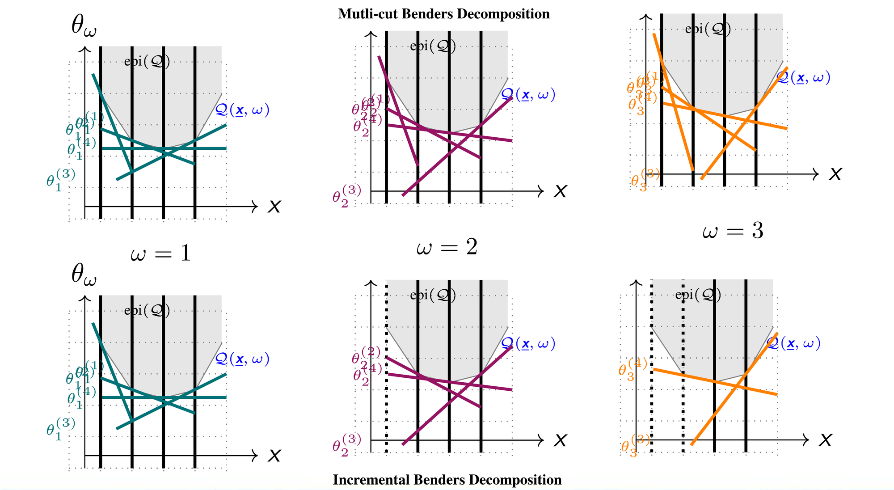
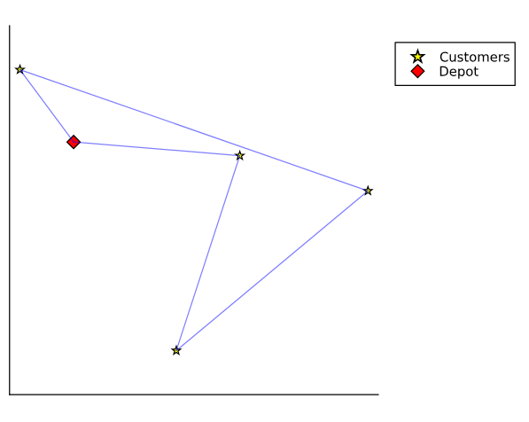
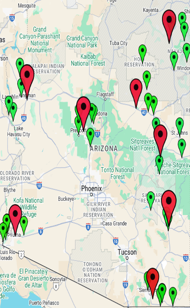
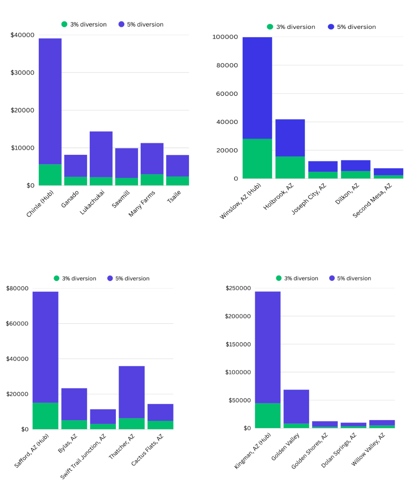
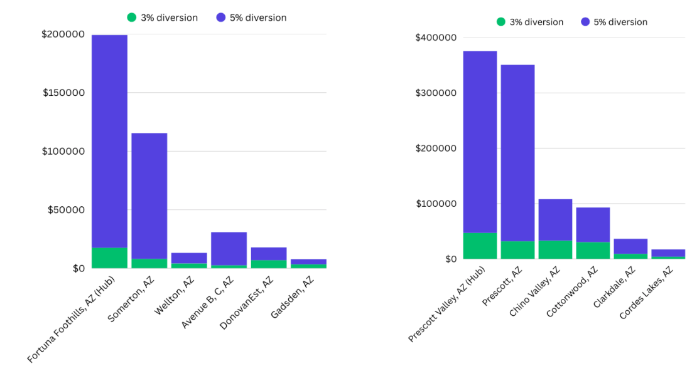
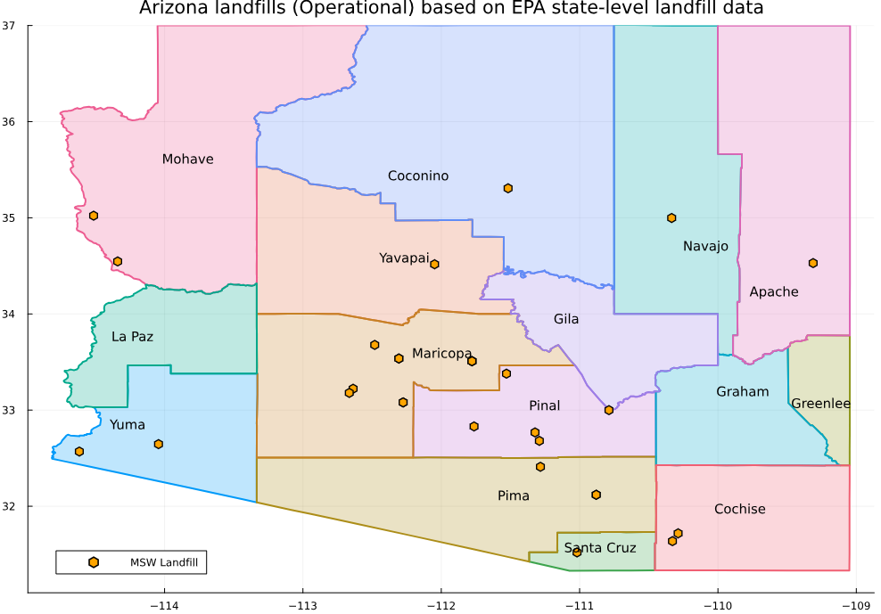
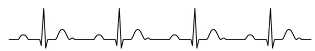
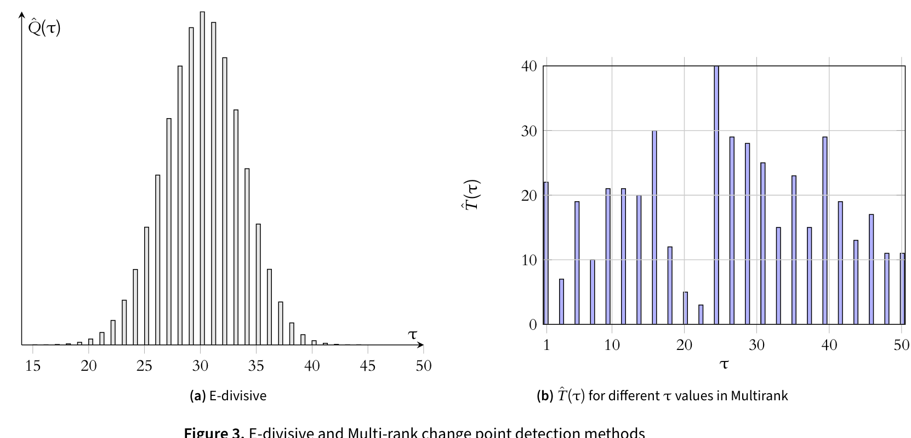
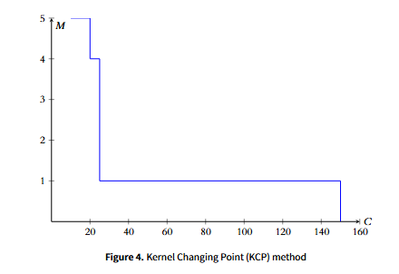

Kazi Wahadul Hasan
PhD Candidate working on developing models and algorithms for stochastic and robust mixed integer programming problems with applications in supply chain, healthcare, machine learning, and transportation system.

About
I am a PhD candidate in industrial engineering with a major in operations research, focused on building optimization models and algorithms that hold up under real-world uncertainty. My research sits between theory and application: I care about provable guarantees, but I test everything against real operational data before I trust it.
Currently, I am working on developing an algorithmic framework for two-stage distributionally robust bilevel optimization problem. Before this, I studied large-scale decomposition algorithms and proposed a novel decomposition framework for two-stage and multi-stage stochastic programs. I also have strong expertise in heuristic algorithms and applied them in inventory optimization and network design problems. Currently, I split my time between methodological research and applied collaborations with industry partners in real-world logistics and supply chain problems.
Research interests
Stochastic optimization
Two-stage and multi-stage stochastic programs; sample average approximation; scenario reduction and aggregation.
Network flows & logistics
Min-cost flow, vehicle routing, and hub-and-spoke location-allocation under demand and supply uncertainty.
Robust and Distributionally robust optimization
Facility planning and capacity expansion using distributionally robust bilevel programming, robust counterpart.
Algorithm design
Large-scale exact algorithms for discrete optimization problems, Heuristic algorithms with worst-case performance guarantees.
Course and research projects
Selected research projects
-
[R1]
A Branch-and-Price-and-Cut Framework for the Multi-Compartment Vehicle Routing Problem

-
[R2]
An optimized hub-and-spoke recycling configuration for selected rural communities in Arizona



-
[R3]
Demographic and Spatial Analysis of Recycling Infrastructure in Rural Arizona

Course projects
-
[C1]
Combinatorial Benders cuts for assembly line balancing problems
-
[C2]
Non-parametric change point detection methods for multivariate time series data



Education & experience
PhD, Industrial Engineering (Operations Research)
Arizona State University
Dissertation: "Models and algorithms for large-scale multi-stage stochastic and robust optimization problems." Advised by Prof. Pitu Mirchandani.
M.Sc, Industrial & Production Engineering
Bangladesh University of Engineering and Technology
Thesis on developing a closed-loop green supply chain model with disruption risks.
B.Sc, Industrial & Systems Engineering
Bangladesh University of Engineering and Technology
Undergraduate thesis on inventory optimization under disruption risk.
Selected publications
Published
-
[J1]
Multi-objective closed-loop green supply chain model with disruption risk
-
[J2]
A pricing model for real-estate business in Bangladesh incorporating the uncertainty in buyer's readiness: considerations during COVID-19 pandemic
-
[J3]
Integrated economic design of quality control and maintenance management: Implications for managing manufacturing process
-
[J4]
Contextual relationships among key factors related to environmental sustainability: Evidence from an emerging economy
In preparation
-
[P1]
Stochastic Hub and Spoke Recycling Problem: An Incremental Benders Decomposition Approach
-
[P2]
A Case Study on Hub and Spoke Recycling for Rural Communities in Arizona